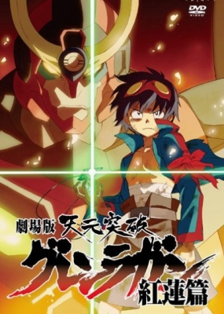
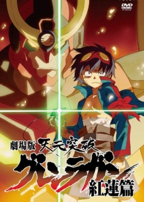
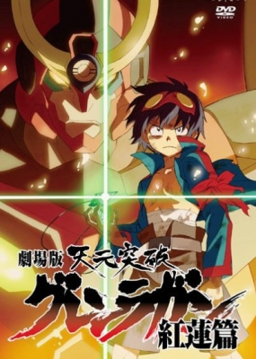

Люди тысячи лет живут жалкой жизнью под землёй, вечно опасаясь тряски и обвалов.В одной из таких
деревень, Дзихе, живут главные герои: Камина и Симон. Симон находит ключ-бур и маленького робота,
которого Камина позже назвал Лаганном. На следующий день в подземную деревню внезапно падает робот
зверочеловека — антропоморфного существа, сочетающего черты людей и зверей. Вслед за роботом в подземелье
падает девушка-снайпер Ёко из деревни Ритона, которая охотится за ганменом. С помощью ключа-бура Симон
заводит Лаганна, побеждает ганмэна и выбирается на поверхность. Приключения начинаются.
Истинная причина проживания людей под землей – вовсе не природные условия, а строгий контроль популяции.
Так называемый Спиральный король с помощью гибридов человека и животного (не способного) к размножению
уничтожает либо излишки населения (численность жителей Земли не должна превышать 1000000 человек), либо тех,
кто пытается выйти на поверхность. Только так он контролирует численность, дабы не сработал механизм, который
убьет всех людей на земле. Именно против всей этой системы восстанет Камина, Симон и их соратники, которые
хотят вернуть свободу человечеству.